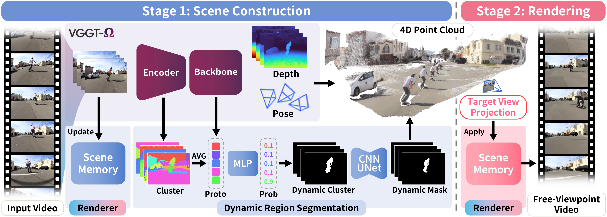

Dynamic novel-view synthesis lets us freely explore a captured moving scene from any viewpoint, enabling free-viewpoint video and immersive VR and AR. To this end, feedforward methods synthesize novel views in a single forward pass without per-scene optimization. Among them, one line predicts explicit 3D representations such as 3D Gaussians, while another directly predicts target views from input images using a learned implicit renderer. Yet explicit methods are limited in fidelity by geometry errors and their fixed rendering process, and implicit renderers without shared 3D geometry struggle to maintain multi-view consistency.
In this paper, we present GG4D, a feedforward framework for dynamic novel-view synthesis that combines explicit scene geometry with implicit image synthesis to achieve both multi-view consistency and high rendering fidelity. First, to aggregate geometry across frames without mixing dynamic regions from different timesteps, we propose an efficient segmentation module that separates static and dynamic regions without off-the-shelf optical flow or segmentation models. Using this separation, we construct a 4D point cloud for explicit 3D representation that guides novel-view synthesis. Second, to enable high-fidelity rendering in real time, we propose Large Chunk Attentive Test-Time Training (LaCAT), which effectively encodes input observations into a compact scene memory through attention. Our implicit renderer, built upon it, summarizes the input video once and reuses this information to synthesize high-quality novel views in real time. Extensive experiments demonstrate that GG4D achieves state-of-the-art quality and multi-view consistency on both monocular and multi-view dynamic scene benchmarks, taking a step toward immersive applications.

GG4D runs in two stages. In scene construction, a frozen geometric foundation model (VGGT-Ω) estimates depth and camera poses, our dynamic region segmentation separates static and dynamic regions from its internal features, and the resulting 4D point cloud accumulates static geometry across time while keeping dynamic geometry per timestep. In parallel, the input frames are written once into a scene memory with LaCAT. In rendering, the point cloud is projected onto the target camera at the requested timestep, and the renderer reads the scene memory to synthesize the image, so the per-view cost stays nearly constant regardless of the number of input frames.
| Method | Monocular | Multi-view | ||||||||||||||
|---|---|---|---|---|---|---|---|---|---|---|---|---|---|---|---|---|
| DyCheck | NVIDIA | Neural3D | REON | |||||||||||||
| mPSNR↑ | mSSIM↑ | mLPIPS↓ | MEt3R↓ | PSNR↑ | SSIM↑ | LPIPS↓ | MEt3R↓ | PSNR↑ | SSIM↑ | LPIPS↓ | MEt3R↓ | PSNR↑ | SSIM↑ | LPIPS↓ | MEt3R↓ | |
| Optimization-based | ||||||||||||||||
| MoSca | 13.94 | 0.311 | 0.234 | 0.553 | 21.01 | 0.619 | 0.163 | 0.271 | – | – | – | – | – | – | – | – |
| IGS | – | – | – | – | – | – | – | – | 15.03 | 0.412 | 0.609 | 0.626 | 19.25 | 0.509 | 0.459 | 0.412 |
| Feedforward | ||||||||||||||||
| 4DGT | 12.10 | 0.287 | 0.250 | 0.430 | 14.67 | 0.319 | 0.640 | 0.509 | – | – | – | – | – | – | – | – |
| MoVieS | 13.79 | 0.345 | 0.205 | 0.415 | 18.11 | 0.536 | 0.269 | 0.257 | – | – | – | – | – | – | – | – |
| FSM | 14.74 | 0.357 | 0.224 | 0.476 | 20.54 | 0.544 | 0.314 | 0.168 | 14.70 | 0.488 | 0.630 | 0.436 | 20.04 | 0.511 | 0.301 | 0.158 |
| REON | – | – | – | – | – | – | – | – | 20.63 | 0.625 | 0.396 | 0.251 | 23.37 | 0.615 | 0.311 | 0.219 |
| GG4D (Ours) | 18.38 | 0.397 | 0.138 | 0.371 | 22.23 | 0.661 | 0.144 | 0.164 | 23.27 | 0.770 | 0.147 | 0.226 | 26.67 | 0.762 | 0.143 | 0.128 |
@article{gg4d2026,
title = {GG4D: Geometry-Guided Dynamic Novel-View Synthesis},
author = {TODO},
journal = {arXiv preprint},
year = {2026}
}